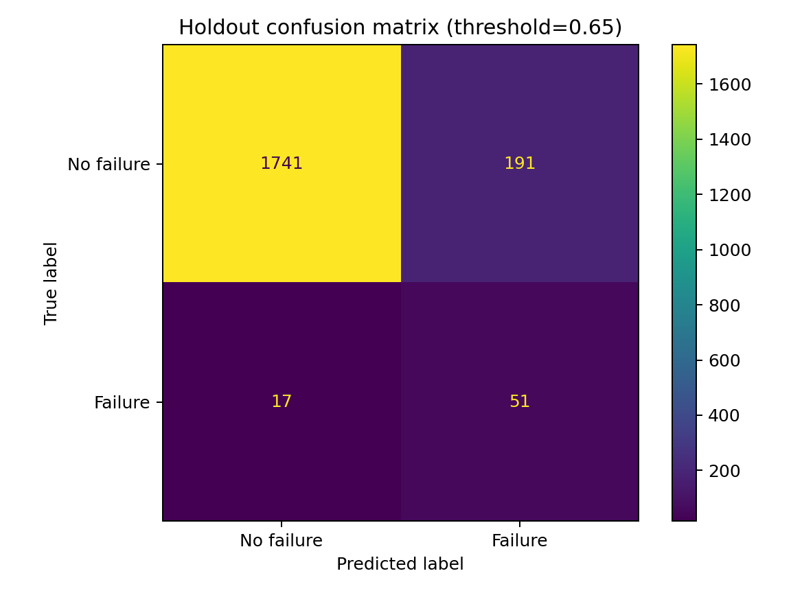

Project report · Machine learning
Predictive Maintenance
Failure Classification
Finding failure records while making the false-alarm trade-off explicit.
Technologies Python · pandas · scikit-learn · Logistic regression · Matplotlib
Project overview
I built a reproducible failure-classification workflow using 10,000 synthetic manufacturing records from UCI’s AI4I 2020 dataset. The objective was to identify records requiring review while measuring how many normal records would also trigger an alert.
My work covers input validation, feature selection, a preprocessing and modelling pipeline, threshold selection, and holdout evaluation. This is a classification study of machine snapshots; it does not estimate remaining useful life or a warning time before breakdown.
How I built it
- Restrict inputs to operational measurements. Use product type, air and process temperature, rotational speed, torque, and tool wear. Exclude identifiers and the five failure-mode columns, which would reveal the outcome being predicted.
- Keep preprocessing inside the model pipeline. Impute and standardise numeric inputs, encode product type, and train class-weighted logistic regression. An 80/20 stratified split reserves 2,000 records for testing, using random seed 42.
- Select the alert threshold before testing. Generate out-of-fold predictions across five training folds, then maximise failure recall subject to a 10% false-positive-rate limit on those predictions. Lock the selected threshold at 0.655 before evaluating the holdout.
Modelling decisions
Keeping imputation, scaling, and encoding inside cross-validation prevents held-out fold records from influencing fitted preprocessing. Class weighting gives rare failures more influence during training. The alert threshold is a separate operating choice: a higher recall can require more inspections of normal equipment.
The 10% false-positive limit is a training-selection constraint, not a guarantee on future data or an established maintenance budget. Stratification preserves the class balance in this random split; it does not test performance on a later production period or a different fleet.
Results
On the 2,000-record holdout, the model caught 51 of 68 failures (75% recall) and missed 17. It also flagged 191 normal records, so only 21.1% of its 242 alerts corresponded to failures. Most alerts would therefore require an inspection that did not confirm a failure.
| Measure | Result |
|---|---|
| Failures caught / missed | 51 / 17 |
| Failure recall | 75.0% |
| False alarms / correct non-failure predictions | 191 / 1,741 |
| Precision · failures among alerts | 21.1% |
| False-positive rate · non-failures flagged | 9.9% |


Figure 1. Holdout classification outcomes
Rows show actual outcomes; columns show predictions. The chart title rounds the threshold to 0.65; evaluation used 0.655. Select the figure to enlarge.
Supporting evaluation: ranking metrics and reproducibility
Average precision was 0.3818 and ROC AUC was 0.9070. These measure ranking across thresholds; the inspection workload above describes the selected operating point. The repository labels average precision as “PR AUC”; the implementation computes scikit-learn’s average_precision_score.
The public metrics file records the threshold, split size, seed, and all four confusion-matrix cells. The training code shows fold construction, threshold selection, and final evaluation; the unit tests check a feasible threshold-selection example and confusion-matrix accounting.
Data, limitations & next steps
AI4I 2020 is a synthetic dataset, published by UCI under CC BY 4.0. Results describe this held-out random split. They do not establish advance warning, avoided downtime, cost savings, or generalisation to real machinery. Class-weighted scores have not been validated as calibrated failure probabilities.
Takeaway & next step. Catching more failures is useful only when the resulting inspection workload is acceptable. Next, I would compare simple sensor rules and alternative thresholds under explicit missed-failure and inspection costs, then evaluate on time-separated operational data before proposing deployment.
Technical evidence: input and feature definitions · modelling & threshold selection · full results · UCI dataset.